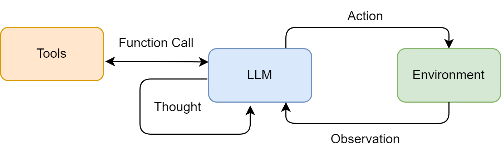
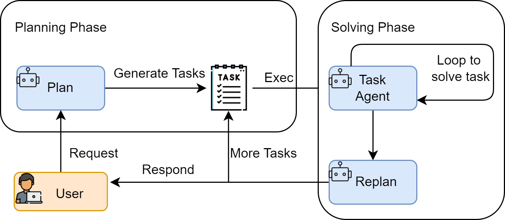
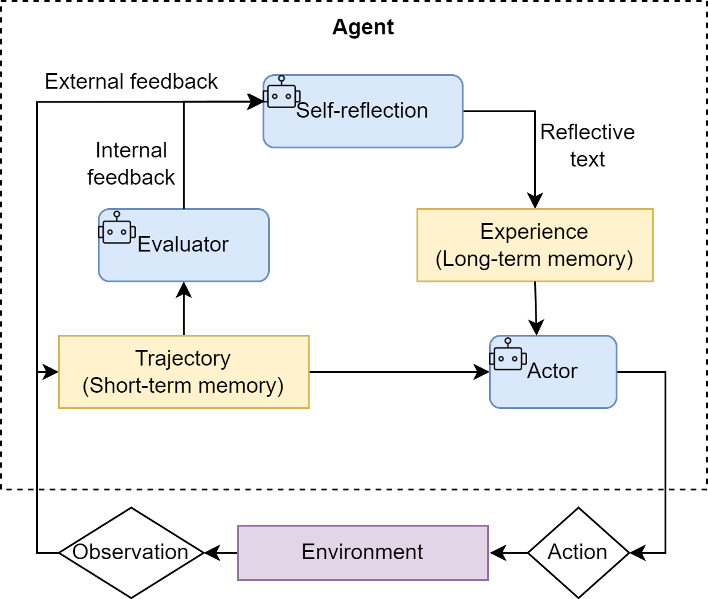
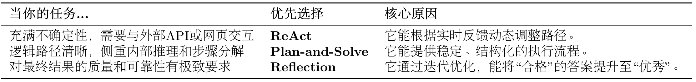

第四章 智能体经典范式构建¶
在上一章中，我们深入探讨了作为现代智能体“大脑”的大语言模型。我们了解了其内部的Transformer架构、与之交互的方法，以及它的能力边界。现在，是时候将这些理论知识转化为实践，亲手构建智能体了。
一个现代的智能体，其核心能力在于能将大语言模型的推理能力与外部世界联通。它能够自主地理解用户意图、拆解复杂任务，并通过调用代码解释器、搜索引擎、API等一系列“工具”，来获取信息、执行操作，最终达成目标。 然而，智能体并非万能，它同样面临着来自大模型本身的“幻觉”问题、在复杂任务中可能陷入推理循环、以及对工具的错误使用等挑战，这些也构成了智能体的能力边界。
为了更好地组织智能体的“思考”与“行动”过程，业界涌现出了多种经典的架构范式。在本章中，我们将聚焦于其中最具代表性的三种，并一步步从零实现它们：
- ReAct (Reasoning and Acting)： 一种将“思考”和“行动”紧密结合的范式，让智能体边想边做，动态调整。
- Plan-and-Solve： 一种“三思而后行”的范式，智能体首先生成一个完整的行动计划，然后严格执行。
- Reflection： 一种赋予智能体“反思”能力的范式，通过自我批判和修正来优化结果。
了解了这些之后，你可能会问，市面上已有LangChain、LlamaIndex等众多优秀框架，为何还要“重复造轮子”？答案在于，尽管成熟的框架在工程效率上优势显著，但直接使用高度抽象的工具，并不利于我们了解背后的设计机制是怎么运行的，或者是有何好处。其次，这个过程会暴露出项目的工程挑战。框架为我们处理了许多问题，例如模型输出格式的解析、工具调用失败的重试、防止智能体陷入死循环等。亲手处理这些问题，是培养系统设计能力的最直接方式。最后，也是最重要的一点，掌握了设计原理，你才能真正地从一个框架的“使用者”转变为一个智能体应用的“创造者”。当标准组件无法满足你的复杂需求时，你将拥有深度定制乃至从零构建一个全新智能体的能力。
4.1 环境准备与基础工具定义¶
在开始构建之前，我们需要先搭建好开发环境并定义一些基础组件。这能帮助我们在后续实现不同范式时，避免重复劳动，更专注于核心逻辑。
4.1.1 安装依赖库¶
本书的实战部分将主要使用 Python 语言，建议使用 Python 3.10 或更高版本。首先，请确保你已经安装了 openai 库用于与大语言模型交互，以及 python-dotenv 库用于安全地管理我们的 API 密钥。
在你的终端中运行以下命令：
4.1.2 配置 API 密钥¶
为了让我们的代码更通用，我们将模型服务的相关信息（模型ID、API密钥、服务地址）统一配置在环境变量中。
- 在你的项目根目录下，创建一个名为
.env的文件。 - 在该文件中，添加以下内容。你可以根据自己的需要，将其指向 OpenAI 官方服务，或任何兼容 OpenAI 接口的本地/第三方服务。
- 如果实在不知道如何获取，可以参考 环境配置
我们的代码将从此文件自动加载这些配置。
4.1.3 封装基础 LLM 调用函数¶
为了让代码结构更清晰、更易于复用，我们来定义一个专属的LLM客户端类。这个类将封装所有与模型服务交互的细节，让我们的主逻辑可以更专注于智能体的构建。
import os
from openai import OpenAI
from dotenv import load_dotenv
from typing import List, Dict
# 加载 .env 文件中的环境变量
load_dotenv()
class HelloAgentsLLM:
"""
为本书 "Hello Agents" 定制的LLM客户端。
它用于调用任何兼容OpenAI接口的服务，并默认使用流式响应。
"""
def __init__(self, model: str = None, apiKey: str = None, baseUrl: str = None, timeout: int = None):
"""
初始化客户端。优先使用传入参数，如果未提供，则从环境变量加载。
"""
self.model = model or os.getenv("LLM_MODEL_ID")
apiKey = apiKey or os.getenv("LLM_API_KEY")
baseUrl = baseUrl or os.getenv("LLM_BASE_URL")
timeout = timeout or int(os.getenv("LLM_TIMEOUT", 60))
if not all([self.model, apiKey, baseUrl]):
raise ValueError("模型ID、API密钥和服务地址必须被提供或在.env文件中定义。")
self.client = OpenAI(api_key=apiKey, base_url=baseUrl, timeout=timeout)
def think(self, messages: List[Dict[str, str]], temperature: float = 0) -> str:
"""
调用大语言模型进行思考，并返回其响应。
"""
print(f"🧠 正在调用 {self.model} 模型...")
try:
response = self.client.chat.completions.create(
model=self.model,
messages=messages,
temperature=temperature,
stream=True,
)
# 处理流式响应
print("✅ 大语言模型响应成功:")
collected_content = []
for chunk in response:
if not chunk.choices:
continue
content = chunk.choices[0].delta.content or ""
print(content, end="", flush=True)
collected_content.append(content)
print() # 在流式输出结束后换行
return "".join(collected_content)
except Exception as e:
print(f"❌ 调用LLM API时发生错误: {e}")
return None
# --- 客户端使用示例 ---
if __name__ == '__main__':
try:
llmClient = HelloAgentsLLM()
exampleMessages = [
{"role": "system", "content": "You are a helpful assistant that writes Python code."},
{"role": "user", "content": "写一个快速排序算法"}
]
print("--- 调用LLM ---")
responseText = llmClient.think(exampleMessages)
if responseText:
print("\n\n--- 完整模型响应 ---")
print(responseText)
except ValueError as e:
print(e)
>>>
--- 调用LLM ---
🧠 正在调用 xxxxxx 模型...
✅ 大语言模型响应成功:
快速排序是一种非常高效的排序算法...
4.2 ReAct¶
在准备好LLM客户端后，我们将构建第一个，也是最经典的一个智能体范式ReAct (Reason + Act)。ReAct由Shunyu Yao于2022年提出[1]，其核心思想是模仿人类解决问题的方式，将推理 (Reasoning) 与行动 (Acting) 显式地结合起来，形成一个“思考-行动-观察”的循环。
4.2.1 ReAct 的工作流程¶
在ReAct诞生之前，主流的方法可以分为两类：一类是“纯思考”型，如思维链 (Chain-of-Thought)，它能引导模型进行复杂的逻辑推理，但无法与外部世界交互，容易产生事实幻觉；另一类是“纯行动”型，模型直接输出要执行的动作，但缺乏规划和纠错能力。
ReAct的巧妙之处在于，它认识到思考与行动是相辅相成的。思考指导行动，而行动的结果又反过来修正思考。为此，ReAct范式通过一种特殊的提示工程来引导模型，使其每一步的输出都遵循一个固定的轨迹：
- Thought (思考)： 这是智能体的“内心独白”。它会分析当前情况、分解任务、制定下一步计划，或者反思上一步的结果。
- Action (行动)： 这是智能体决定采取的具体动作，通常是调用一个外部工具，例如
Search['华为最新款手机']。 - Observation (观察)： 这是执行
Action后从外部工具返回的结果，例如搜索结果的摘要或API的返回值。
智能体将不断重复这个 Thought -> Action -> Observation 的循环，将新的观察结果追加到历史记录中，形成一个不断增长的上下文，直到它在Thought中认为已经找到了最终答案，然后输出结果。这个过程形成了一个强大的协同效应：推理使得行动更具目的性，而行动则为推理提供了事实依据。
我们可以将这个过程形式化地表达出来，如图4.1所示。具体来说，在每个时间步 \(t\)，智能体的策略（即大语言模型 \(\pi\)）会根据初始问题 \(q\) 和之前所有步骤的“行动-观察”历史轨迹 \(((a_1,o_1),\dots,(a_{t-1},o_{t-1}))\)，来生成当前的思考 \(th_t\) 和行动 \(a_t\)：
随后，环境中的工具 \(T\) 会执行行动 \(a_t\)，并返回一个新的观察结果 \(o_t\)：
这个循环不断进行，将新的 \((a_t,o_t)\) 对追加到历史中，直到模型在思考 \(th_t\) 中判断任务已完成。

图 4.1 ReAct 范式中的“思考-行动-观察”协同循环
这种机制特别适用于以下场景：
- 需要外部知识的任务：如查询实时信息（天气、新闻、股价）、搜索专业领域的知识等。
- 需要精确计算的任务：将数学问题交给计算器工具，避免LLM的计算错误。
- 需要与API交互的任务：如操作数据库、调用某个服务的API来完成特定功能。
因此我们将构建一个具备使用外部工具能力的ReAct智能体，来回答一个大语言模型仅凭自身知识库无法直接回答的问题。例如：“华为最新的手机是哪一款？它的主要卖点是什么？” 这个问题需要智能体理解自己需要上网搜索，调用工具搜索结果并总结答案。
4.2.2 工具的定义与实现¶
如果说大语言模型是智能体的大脑，那么工具 (Tools) 就是其与外部世界交互的“手和脚”。为了让ReAct范式能够真正解决我们设定的问题，智能体需要具备调用外部工具的能力。
针对本节设定的目标——回答关于“华为最新手机”的问题，我们需要为智能体提供一个网页搜索工具。在这里我们选用 SerpApi，它通过API提供结构化的Google搜索结果，能直接返回“答案摘要框”或精确的知识图谱信息。
首先，需要安装该库：
同时，你需要前往 SerpApi官网 注册一个免费账户，获取你的API密钥，并将其添加到我们项目根目录下的 .env 文件中：
接下来，我们通过代码来定义和管理这个工具。我们将分步进行：首先实现工具的核心功能，然后构建一个通用的工具管理器。
（1）实现搜索工具的核心逻辑
一个良好定义的工具应包含以下三个核心要素：
- 名称 (Name)： 一个简洁、唯一的标识符，供智能体在
Action中调用，例如Search。 - 描述 (Description)： 一段清晰的自然语言描述，说明这个工具的用途。这是整个机制中最关键的部分，因为大语言模型会依赖这段描述来判断何时使用哪个工具。
- 执行逻辑 (Execution Logic)： 真正执行任务的函数或方法。
我们的第一个工具是 search 函数，它的作用是接收一个查询字符串，然后返回搜索结果。
from serpapi import SerpApiClient
def search(query: str) -> str:
"""
一个基于SerpApi的实战网页搜索引擎工具。
它会智能地解析搜索结果，优先返回直接答案或知识图谱信息。
"""
print(f"🔍 正在执行 [SerpApi] 网页搜索: {query}")
try:
api_key = os.getenv("SERPAPI_API_KEY")
if not api_key:
return "错误:SERPAPI_API_KEY 未在 .env 文件中配置。"
params = {
"engine": "google",
"q": query,
"api_key": api_key,
"gl": "cn", # 国家代码
"hl": "zh-cn", # 语言代码
}
client = SerpApiClient(params)
results = client.get_dict()
# 智能解析:优先寻找最直接的答案
if "answer_box_list" in results:
return "\n".join(results["answer_box_list"])
if "answer_box" in results and "answer" in results["answer_box"]:
return results["answer_box"]["answer"]
if "knowledge_graph" in results and "description" in results["knowledge_graph"]:
return results["knowledge_graph"]["description"]
if "organic_results" in results and results["organic_results"]:
# 如果没有直接答案，则返回前三个有机结果的摘要
snippets = [
f"[{i+1}] {res.get('title', '')}\n{res.get('snippet', '')}"
for i, res in enumerate(results["organic_results"][:3])
]
return "\n\n".join(snippets)
return f"对不起，没有找到关于 '{query}' 的信息。"
except Exception as e:
return f"搜索时发生错误: {e}"
在上述代码中，首先会检查是否存在 answer_box（Google的答案摘要框）或 knowledge_graph（知识图谱）等信息，如果存在，就直接返回这些最精确的答案。如果不存在，它才会退而求其次，返回前三个常规搜索结果的摘要。这种“智能解析”能为LLM提供质量更高的信息输入。
（2）构建通用的工具执行器
当智能体需要使用多种工具时（例如，除了搜索，还可能需要计算、查询数据库等），我们需要一个统一的管理器来注册和调度这些工具。为此，我们创建一个 ToolExecutor 类。
from typing import Dict, Any
class ToolExecutor:
"""
一个工具执行器，负责管理和执行工具。
"""
def __init__(self):
self.tools: Dict[str, Dict[str, Any]] = {}
def registerTool(self, name: str, description: str, func: callable):
"""
向工具箱中注册一个新工具。
"""
if name in self.tools:
print(f"警告:工具 '{name}' 已存在，将被覆盖。")
self.tools[name] = {"description": description, "func": func}
print(f"工具 '{name}' 已注册。")
def getTool(self, name: str) -> callable:
"""
根据名称获取一个工具的执行函数。
"""
return self.tools.get(name, {}).get("func")
def getAvailableTools(self) -> str:
"""
获取所有可用工具的格式化描述字符串。
"""
return "\n".join([
f"- {name}: {info['description']}"
for name, info in self.tools.items()
])
(3)测试
现在，我们将 search 工具注册到 ToolExecutor 中，并模拟一次调用，以验证整个流程是否正常工作。
# --- 工具初始化与使用示例 ---
if __name__ == '__main__':
# 1. 初始化工具执行器
toolExecutor = ToolExecutor()
# 2. 注册我们的实战搜索工具
search_description = "一个网页搜索引擎。当你需要回答关于时事、事实以及在你的知识库中找不到的信息时，应使用此工具。"
toolExecutor.registerTool("Search", search_description, search)
# 3. 打印可用的工具
print("\n--- 可用的工具 ---")
print(toolExecutor.getAvailableTools())
# 4. 智能体的Action调用，这次我们问一个实时性的问题
print("\n--- 执行 Action: Search['英伟达最新的GPU型号是什么'] ---")
tool_name = "Search"
tool_input = "英伟达最新的GPU型号是什么"
tool_function = toolExecutor.getTool(tool_name)
if tool_function:
observation = tool_function(tool_input)
print("--- 观察 (Observation) ---")
print(observation)
else:
print(f"错误:未找到名为 '{tool_name}' 的工具。")
>>>
工具 'Search' 已注册。
--- 可用的工具 ---
- Search: 一个网页搜索引擎。当你需要回答关于时事、事实以及在你的知识库中找不到的信息时，应使用此工具。
--- 执行 Action: Search['英伟达最新的GPU型号是什么'] ---
🔍 正在执行 [SerpApi] 网页搜索: 英伟达最新的GPU型号是什么
--- 观察 (Observation) ---
[1] GeForce RTX 50 系列显卡
GeForce RTX™ 50 系列GPU 搭载NVIDIA Blackwell 架构，为游戏玩家和创作者带来全新玩法。RTX 50 系列具备强大的AI 算力，带来升级体验和更逼真的画面。
[2] 比较GeForce 系列最新一代显卡和前代显卡
比较最新一代RTX 30 系列显卡和前代的RTX 20 系列、GTX 10 和900 系列显卡。查看规格、功能、技术支持等内容。
[3] GeForce 显卡| NVIDIA
DRIVE AGX. 强大的车载计算能力，适用于AI 驱动的智能汽车系统 · Clara AGX. 适用于创新型医疗设备和成像的AI 计算. 游戏和创作. GeForce. 探索显卡、游戏解决方案、AI ...
至此，我们已经为智能体配备了连接真实世界互联网的Search工具，为后续的ReAct循环提供了坚实的基础。
4.2.3 ReAct 智能体的编码实现¶
现在，我们将所有独立的组件，LLM客户端和工具执行器组装起来，构建一个完整的 ReAct 智能体。我们将通过一个 ReActAgent 类来封装其核心逻辑。为了便于理解，我们将这个类的实现过程拆分为以下几个关键部分进行讲解。
（1）系统提示词设计
提示词是整个 ReAct 机制的基石，它为大语言模型提供了行动的操作指令。我们需要精心设计一个模板，它将动态地插入可用工具、用户问题以及中间步骤的交互历史。
# ReAct 提示词模板
REACT_PROMPT_TEMPLATE = """
请注意，你是一个有能力调用外部工具的智能助手。
可用工具如下:
{tools}
请严格按照以下格式进行回应:
Thought: 你的思考过程，用于分析问题、拆解任务和规划下一步行动。
Action: 你决定采取的行动，必须是以下格式之一:
- `{{tool_name}}[{{tool_input}}]`:调用一个可用工具。
- `Finish[最终答案]`:当你认为已经获得最终答案时。
- 当你收集到足够的信息，能够回答用户的最终问题时，你必须在Action:字段后使用 Finish[最终答案] 来输出最终答案。
现在，请开始解决以下问题:
Question: {question}
History: {history}
"""
这个模板定义了智能体与LLM之间交互的规范：
- 角色定义： “你是一个有能力调用外部工具的智能助手”，设定了LLM的角色。
- 工具清单 (
{tools})： 告知LLM它有哪些可用的“手脚”。 - 格式规约 (
Thought/Action)： 这是最重要的部分，它强制LLM的输出具有结构性，使我们能通过代码精确解析其意图。 - 动态上下文 (
{question}/{history})： 将用户的原始问题和不断累积的交互历史注入，让LLM基于完整的上下文进行决策。
（2）核心循环的实现
ReActAgent 的核心是一个循环，它不断地“格式化提示词 -> 调用LLM -> 执行动作 -> 整合结果”，直到任务完成或达到最大步数限制。
class ReActAgent:
def __init__(self, llm_client: HelloAgentsLLM, tool_executor: ToolExecutor, max_steps: int = 5):
self.llm_client = llm_client
self.tool_executor = tool_executor
self.max_steps = max_steps
self.history = []
def run(self, question: str):
"""
运行ReAct智能体来回答一个问题。
"""
self.history = [] # 每次运行时重置历史记录
current_step = 0
while current_step < self.max_steps:
current_step += 1
print(f"--- 第 {current_step} 步 ---")
# 1. 格式化提示词
tools_desc = self.tool_executor.getAvailableTools()
history_str = "\n".join(self.history)
prompt = REACT_PROMPT_TEMPLATE.format(
tools=tools_desc,
question=question,
history=history_str
)
# 2. 调用LLM进行思考
messages = [{"role": "user", "content": prompt}]
response_text = self.llm_client.think(messages=messages)
if not response_text:
print("错误:LLM未能返回有效响应。")
break
# ... (后续的解析、执行、整合步骤)
run 方法是智能体的入口。它的 while 循环构成了 ReAct 范式的主体，max_steps 参数则是一个重要的安全阀，防止智能体陷入无限循环而耗尽资源。
（3）输出解析器的实现
LLM 返回的是纯文本，我们需要从中精确地提取出Thought和Action。这是通过几个辅助解析函数完成的，它们通常使用正则表达式来实现。
# (这些方法是 ReActAgent 类的一部分)
def _parse_output(self, text: str):
"""解析LLM的输出，提取Thought和Action。
"""
# Thought: 匹配到 Action: 或文本末尾
thought_match = re.search(r"Thought:\s*(.*?)(?=\nAction:|$)", text, re.DOTALL)
# Action: 匹配到文本末尾
action_match = re.search(r"Action:\s*(.*?)$", text, re.DOTALL)
thought = thought_match.group(1).strip() if thought_match else None
action = action_match.group(1).strip() if action_match else None
return thought, action
def _parse_action(self, action_text: str):
"""解析Action字符串，提取工具名称和输入。
"""
match = re.match(r"(\w+)\[(.*)\]", action_text, re.DOTALL)
if match:
return match.group(1), match.group(2)
return None, None
_parse_output： 负责从LLM的完整响应中分离出Thought和Action两个主要部分。_parse_action： 负责进一步解析Action字符串，例如从Search[华为最新手机]中提取出工具名Search和工具输入华为最新手机。
(4) 工具调用与执行
# (这段逻辑在 run 方法的 while 循环内)
# 3. 解析LLM的输出
thought, action = self._parse_output(response_text)
if thought:
print(f"思考: {thought}")
if not action:
print("警告:未能解析出有效的Action，流程终止。")
break
# 4. 执行Action
if action.startswith("Finish"):
# 如果是Finish指令，提取最终答案并结束
final_answer = re.match(r"Finish\[(.*)\]", action).group(1)
print(f"🎉 最终答案: {final_answer}")
return final_answer
tool_name, tool_input = self._parse_action(action)
if not tool_name or not tool_input:
# ... 处理无效Action格式 ...
continue
print(f"🎬 行动: {tool_name}[{tool_input}]")
tool_function = self.tool_executor.getTool(tool_name)
if not tool_function:
observation = f"错误:未找到名为 '{tool_name}' 的工具。"
else:
observation = tool_function(tool_input) # 调用真实工具
这段代码是Action的执行中心。它首先检查是否为Finish指令，如果是，则流程结束。否则，它会通过tool_executor获取对应的工具函数并执行，得到observation。
(5）观测结果的整合
最后一步，也是形成闭环的关键，是将Action本身和工具执行后的Observation添加回历史记录中，为下一轮循环提供新的上下文。
# (这段逻辑紧随工具调用之后，在 while 循环的末尾)
print(f"👀 观察: {observation}")
# 将本轮的Action和Observation添加到历史记录中
self.history.append(f"Action: {action}")
self.history.append(f"Observation: {observation}")
# 循环结束
print("已达到最大步数，流程终止。")
return None
通过将Observation追加到self.history，智能体在下一轮生成提示词时，就能“看到”上一步行动的结果，并据此进行新一轮的思考和规划。
（6）运行实例与分析
将以上所有部分组合起来，我们就得到了完整的 ReActAgent 类。完整的代码运行实例可以在本书配套的代码仓库 code 文件夹中找到。
下面是一次真实的运行记录：
工具 'Search' 已注册。
--- 第 1 步 ---
🧠 正在调用 xxxxxx 模型...
✅ 大语言模型响应成功:
Thought: 要回答这个问题，我需要查找华为最新发布的手机型号及其主要特点。这些信息可能在我的现有知识库之外，因此需要使用搜索引擎来获取最新数据。
Action: Search[华为最新手机型号及主要卖点]
🤔 思考: 要回答这个问题，我需要查找华为最新发布的手机型号及其主要特点。这些信息可能在我的现有知识库之外，因此需要使用搜索引擎来获取最新数据。
🎬 行动: Search[华为最新手机型号及主要卖点]
🔍 正在执行 [SerpApi] 网页搜索: 华为最新手机型号及主要卖点
👀 观察: [1] 华为手机- 华为官网
智能手机 ; Mate 系列. 非凡旗舰 · HUAWEI Mate XTs. 非凡大师 ; Pura 系列. 先锋影像 · HUAWEI Pura 80 Pro+ ; Pocket 系列. 美学新篇. HUAWEI Pocket 2 ; nova 系列. 专业人像.
[2] 2025年华为手机哪一款性价比高？华为手机推荐与市场分析 ...
现在华为手机最大的卖点只剩下鸿蒙HarmonyOS系统，以及饱受争议的品牌信仰。 这里推荐目前值得入手的几款华为系列手机，根据不同预算自行选择:. 华为目前最受欢迎，也是搭载 ...
[3] 2025年华为新款手机哪个性价比高？10款华为新款手机推荐
选华为主要还是要推荐高端手机，Mate 70和Pura 70系列是最新发布的旗舰机型。 HUAWEI Mate 70. 优点是，拍照配置依旧顶级，全焦段覆盖，适合专业摄影，做工出色，户外抗摔 ...
--- 第 2 步 ---
🧠 正在调用 xxxxxx 模型...
✅ 大语言模型响应成功:
Thought: 根据搜索结果，华为最新发布的旗舰机型包括Mate 70和Pura 80 Pro+。为了确定最新型号及其主要卖点，我将重点放在这些信息上。从提供的链接来看，Mate 70系列和Pura 80 Pro+都是近期发布的产品，但具体哪一个是“最新”还需要进一步确认。同时，我可以从这些信息中提取出它们的主要
卖点。
Action: Finish[根据最新信息，华为的最新手机可能是HUAWEI Pura 80 Pro+或HUAWEI Mate 70。其中，HUAWEI Mate 70的主要卖点包括顶级的拍照配置，全焦段覆盖，适合专业摄影，做工出色，并且具有良好的户外抗摔性能。而HUAWEI Pura 80 Pro+则强调了先锋影像技术。]
🤔 思考: 根据搜索结果，华为最新发布的旗舰机型包括Mate 70和Pura 80 Pro+。为了确定最新型号及其主要卖点，我将重点放在这些信息上。从提供的链接来看，Mate 70系列和Pura 80 Pro+都是近期发布的产品，但具体哪一个是“最新”还需要进一步确认。同时，我可以从这些信息中提取出它们的主要
卖点。
🎉 最终答案: 根据最新信息，华为的最新手机可能是HUAWEI Pura 80 Pro+或HUAWEI Mate 70。其中，HUAWEI Mate 70的主要卖点包括顶级的拍照配置，全焦段覆盖，适合专业摄影，做工出色，并且具有良好的户外抗摔性能。而HUAWEI Pura 80 Pro+则强调了先锋影像技术。
从上面的输出可以看到，智能体清晰地展示了它的思考链条：它首先意识到自己的知识不足，需要使用搜索工具；然后，它根据搜索结果进行推理和总结，并在两步之内得出了最终答案。
值得注意的是，由于模型的知识和互联网的信息是不断更新的，你运行的结果可能与此不完全相同。截止本节内容编写的2025年9月8日，搜索结果中提到的HUAWEI Mate 70与HUAWEI Pura 80 Pro+确实是华为当时最新的旗舰系列手机。这充分展示了ReAct范式在处理时效性问题上的强大能力。
4.2.4 ReAct 的特点、局限性与调试技巧¶
通过亲手实现一个 ReAct 智能体，我们不仅掌握了其工作流程，也应该对其内在机制有了更深刻的认识。任何技术范式都有其闪光点和待改进之处，本节将对 ReAct 进行总结。
（1）ReAct 的主要特点
- 高可解释性：ReAct 最大的优点之一就是透明。通过
Thought链，我们可以清晰地看到智能体每一步的“心路历程”——它为什么会选择这个工具，下一步又打算做什么。这对于理解、信任和调试智能体的行为至关重要。 - 动态规划与纠错能力：与一次性生成完整计划的范式不同，ReAct 是“走一步，看一步”。它根据每一步从外部世界获得的
Observation来动态调整后续的Thought和Action。如果上一步的搜索结果不理想，它可以在下一步中修正搜索词，重新尝试。 - 工具协同能力：ReAct 范式天然地将大语言模型的推理能力与外部工具的执行能力结合起来。LLM 负责运筹帷幄（规划和推理），工具负责解决具体问题（搜索、计算），二者协同工作，突破了单一 LLM 在知识时效性、计算准确性等方面的固有局限。
（2）ReAct 的固有局限性
- 对LLM自身能力的强依赖：ReAct 流程的成功与否，高度依赖于底层 LLM 的综合能力。如果 LLM 的逻辑推理能力、指令遵循能力或格式化输出能力不足，就很容易在
Thought环节产生错误的规划，或者在Action环节生成不符合格式的指令，导致整个流程中断。 - 执行效率问题：由于其循序渐进的特性，完成一个任务通常需要多次调用 LLM。每一次调用都伴随着网络延迟和计算成本。对于需要很多步骤的复杂任务，这种串行的“思考-行动”循环可能会导致较高的总耗时和费用。
- 提示词的脆弱性：整个机制的稳定运行建立在一个精心设计的提示词模板之上。模板中的任何微小变动，甚至是用词的差异，都可能影响 LLM 的行为。此外，并非所有模型都能持续稳定地遵循预设的格式，这增加了在实际应用中的不确定性。
- 可能陷入局部最优：步进式的决策模式意味着智能体缺乏一个全局的、长远的规划。它可能会因为眼前的
Observation而选择一个看似正确但长远来看并非最优的路径，甚至在某些情况下陷入“原地打转”的循环中。
（3）调试技巧
当你构建的 ReAct 智能体行为不符合预期时，可以从以下几个方面入手进行调试：
- 检查完整的提示词：在每次调用 LLM 之前，将最终格式化好的、包含所有历史记录的完整提示词打印出来。这是追溯 LLM 决策源头的最直接方式。
- 分析原始输出：当输出解析失败时（例如，正则表达式没有匹配到
Action），务必将 LLM 返回的原始、未经处理的文本打印出来。这能帮助你判断是 LLM 没有遵循格式，还是你的解析逻辑有误。 - 验证工具的输入与输出：检查智能体生成的
tool_input是否是工具函数所期望的格式，同时也要确保工具返回的observation格式是智能体可以理解和处理的。 - 调整提示词中的示例 (Few-shot Prompting)：如果模型频繁出错，可以在提示词中加入一两个完整的“Thought-Action-Observation”成功案例，通过示例来引导模型更好地遵循你的指令。
- 尝试不同的模型或参数：更换一个能力更强的模型，或者调整
temperature参数（通常设为0以保证输出的确定性），有时能直接解决问题。
4.3 Plan-and-Solve¶
在我们掌握了 ReAct 这种反应式的、步进决策的智能体范式后，接下来将探讨一种风格迥异但同样强大的方法，Plan-and-Solve。顾名思义，这种范式将任务处理明确地分为两个阶段：先规划 (Plan)，后执行 (Solve)。
如果说 ReAct 像一个经验丰富的侦探，根据现场的蛛丝马迹（Observation）一步步推理，随时调整自己的调查方向；那么 Plan-and-Solve 则更像一位建筑师，在动工之前必须先绘制出完整的蓝图（Plan），然后严格按照蓝图来施工（Solve）。事实上我们现在用的很多大模型工具的Agent模式都融入了这种设计模式。
4.3.1 Plan-and-Solve 的工作原理¶
Plan-and-Solve Prompting 由 Lei Wang 在2023年提出[2]。其核心动机是为了解决思维链在处理多步骤、复杂问题时容易“偏离轨道”的问题。
与 ReAct 将思考和行动融合在每一步不同，Plan-and-Solve 将整个流程解耦为两个核心阶段，如图4.2所示：
- 规划阶段 (Planning Phase)： 首先，智能体会接收用户的完整问题。它的第一个任务不是直接去解决问题或调用工具，而是将问题分解，并制定出一个清晰、分步骤的行动计划。这个计划本身就是一次大语言模型的调用产物。
- 执行阶段 (Solving Phase)： 在获得完整的计划后，智能体进入执行阶段。它会严格按照计划中的步骤，逐一执行。每一步的执行都可能是一次独立的 LLM 调用，或者是对上一步结果的加工处理，直到计划中的所有步骤都完成，最终得出答案。
这种“先谋后动”的策略，使得智能体在处理需要长远规划的复杂任务时，能够保持更高的目标一致性，避免在中间步骤中迷失方向。
我们可以将这个两阶段过程进行形式化表达。首先，规划模型 \(\pi_{\text{plan}}\) 根据原始问题 \(q\) 生成一个包含 \(n\) 个步骤的计划 \(P = (p_1, p_2, \dots, p_n)\)：
随后，在执行阶段，执行模型 \(\pi_{\text{solve}}\) 会逐一完成计划中的步骤。对于第 \(i\) 个步骤，其解决方案 \(s_i\) 的生成会同时依赖于原始问题 \(q\)、完整计划 \(P\) 以及之前所有步骤的执行结果 \((s_1, \dots, s_{i-1})\)：
最终的答案就是最后一个步骤的执行结果 \(s_n\)。

图 4.2 Plan-and-Solve 范式的两阶段工作流
Plan-and-Solve 尤其适用于那些结构性强、可以被清晰分解的复杂任务，例如：
- 多步数学应用题：需要先列出计算步骤，再逐一求解。
- 需要整合多个信息源的报告撰写：需要先规划好报告结构（引言、数据来源A、数据来源B、总结），再逐一填充内容。
- 代码生成任务：需要先构思好函数、类和模块的结构，再逐一实现。
4.3.2 规划阶段¶
为了凸显 Plan-and-Solve 范式在结构化推理任务上的优势，我们将不使用工具的方式，而是通过提示词的设计，完成一个推理任务。
这类任务的特点是，答案无法通过单次查询或计算得出，必须先将问题分解为一系列逻辑连贯的子步骤，然后按顺序求解。这恰好能发挥 Plan-and-Solve “先规划，后执行”的核心能力。
我们的目标问题是：“一个水果店周一卖出了15个苹果。周二卖出的苹果数量是周一的两倍。周三卖出的数量比周二少了5个。请问这三天总共卖出了多少个苹果？”
这个问题对于大语言模型来说并不算特别困难，但它包含了一个清晰的逻辑链条可供参考。在某些实际的逻辑难题上，如果大模型不能高质量的推理出准确的答案，可以参考这个设计模式来设计自己的Agent完成任务。智能体需要：
- 规划阶段：首先，将问题分解为三个独立的计算步骤（计算周二销量、计算周三销量、计算总销量）。
- 执行阶段：然后，严格按照计划，一步步执行计算，并将每一步的结果作为下一步的输入，最终得出总和。
规划阶段的目标是让大语言模型接收原始问题，并输出一个清晰、分步骤的行动计划。这个计划必须是结构化的，以便我们的代码可以轻松解析并逐一执行。因此，我们设计的提示词需要明确地告诉模型它的角色和任务，并给出一个输出格式的范例。
PLANNER_PROMPT_TEMPLATE = """
你是一个顶级的AI规划专家。你的任务是将用户提出的复杂问题分解成一个由多个简单步骤组成的行动计划。
请确保计划中的每个步骤都是一个独立的、可执行的子任务，并且严格按照逻辑顺序排列。
你的输出必须是一个Python列表，其中每个元素都是一个描述子任务的字符串。
问题: {question}
请严格按照以下格式输出你的计划,```python与```作为前后缀是必要的:
```python
["步骤1", "步骤2", "步骤3", ...]
```
"""
这个提示词通过以下几点确保了输出的质量和稳定性： - 角色设定： “顶级的AI规划专家”，激发模型的专业能力。 - 任务描述： 清晰地定义了“分解问题”的目标。 - 格式约束： 强制要求输出为一个 Python 列表格式的字符串，这极大地简化了后续代码的解析工作，使其比解析自然语言更稳定、更可靠。
接下来，我们将这个提示词逻辑封装成一个 Planner 类，这个类也是我们的规划器。
# 假定 llm_client.py 中的 HelloAgentsLLM 类已经定义好
# from llm_client import HelloAgentsLLM
class Planner:
def __init__(self, llm_client):
self.llm_client = llm_client
def plan(self, question: str) -> list[str]:
"""
根据用户问题生成一个行动计划。
"""
prompt = PLANNER_PROMPT_TEMPLATE.format(question=question)
# 为了生成计划，我们构建一个简单的消息列表
messages = [{"role": "user", "content": prompt}]
print("--- 正在生成计划 ---")
# 使用流式输出来获取完整的计划
response_text = self.llm_client.think(messages=messages) or ""
print(f"✅ 计划已生成:\n{response_text}")
# 解析LLM输出的列表字符串
try:
# 找到```python和```之间的内容
plan_str = response_text.split("```python")[1].split("```")[0].strip()
# 使用ast.literal_eval来安全地执行字符串，将其转换为Python列表
plan = ast.literal_eval(plan_str)
return plan if isinstance(plan, list) else []
except (ValueError, SyntaxError, IndexError) as e:
print(f"❌ 解析计划时出错: {e}")
print(f"原始响应: {response_text}")
return []
except Exception as e:
print(f"❌ 解析计划时发生未知错误: {e}")
return []
4.3.3 执行器与状态管理¶
在规划器 (Planner) 生成了清晰的行动蓝图后，我们就需要一个执行器 (Executor) 来逐一完成计划中的任务。执行器不仅负责调用大语言模型来解决每个子问题，还承担着一个至关重要的角色：状态管理。它必须记录每一步的执行结果，并将其作为上下文提供给后续步骤，确保信息在整个任务链条中顺畅流动
执行器的提示词与规划器不同。它的目标不是分解问题，而是在已有上下文的基础上，专注解决当前这一个步骤。因此，提示词需要包含以下关键信息：
- 原始问题： 确保模型始终了解最终目标。
- 完整计划： 让模型了解当前步骤在整个任务中的位置。
- 历史步骤与结果： 提供至今为止已经完成的工作，作为当前步骤的直接输入。
- 当前步骤： 明确指示模型现在需要解决哪一个具体任务。
EXECUTOR_PROMPT_TEMPLATE = """
你是一位顶级的AI执行专家。你的任务是严格按照给定的计划，一步步地解决问题。
你将收到原始问题、完整的计划、以及到目前为止已经完成的步骤和结果。
请你专注于解决“当前步骤”，并仅输出该步骤的最终答案，不要输出任何额外的解释或对话。
# 原始问题:
{question}
# 完整计划:
{plan}
# 历史步骤与结果:
{history}
# 当前步骤:
{current_step}
请仅输出针对“当前步骤”的回答:
"""
我们将执行逻辑封装到 Executor 类中。这个类将循环遍历计划，调用 LLM，并维护一个历史记录（状态）。
class Executor:
def __init__(self, llm_client):
self.llm_client = llm_client
def execute(self, question: str, plan: list[str]) -> str:
"""
根据计划，逐步执行并解决问题。
"""
history = "" # 用于存储历史步骤和结果的字符串
print("\n--- 正在执行计划 ---")
for i, step in enumerate(plan):
print(f"\n-> 正在执行步骤 {i+1}/{len(plan)}: {step}")
prompt = EXECUTOR_PROMPT_TEMPLATE.format(
question=question,
plan=plan,
history=history if history else "无", # 如果是第一步，则历史为空
current_step=step
)
messages = [{"role": "user", "content": prompt}]
response_text = self.llm_client.think(messages=messages) or ""
# 更新历史记录，为下一步做准备
history += f"步骤 {i+1}: {step}\n结果: {response_text}\n\n"
print(f"✅ 步骤 {i+1} 已完成，结果: {response_text}")
# 循环结束后，最后一步的响应就是最终答案
final_answer = response_text
return final_answer
现在已经分别构建了负责“规划”的 Planner 和负责“执行”的 Executor。最后一步是将这两个组件整合到一个统一的智能体 PlanAndSolveAgent 中，并赋予它解决问题的完整能力。我们将创建一个主类 PlanAndSolveAgent，它的职责非常清晰：接收一个 LLM 客户端，初始化内部的规划器和执行器，并提供一个简单的 run 方法来启动整个流程。
class PlanAndSolveAgent:
def __init__(self, llm_client):
"""
初始化智能体，同时创建规划器和执行器实例。
"""
self.llm_client = llm_client
self.planner = Planner(self.llm_client)
self.executor = Executor(self.llm_client)
def run(self, question: str):
"""
运行智能体的完整流程:先规划，后执行。
"""
print(f"\n--- 开始处理问题 ---\n问题: {question}")
# 1. 调用规划器生成计划
plan = self.planner.plan(question)
# 检查计划是否成功生成
if not plan:
print("\n--- 任务终止 --- \n无法生成有效的行动计划。")
return
# 2. 调用执行器执行计划
final_answer = self.executor.execute(question, plan)
print(f"\n--- 任务完成 ---\n最终答案: {final_answer}")
这个 PlanAndSolveAgent 类的设计体现了“组合优于继承”的原则。它本身不包含复杂的逻辑，而是作为一个协调者 (Orchestrator)，清晰地调用其内部组件来完成任务。
4.3.4 运行实例与分析¶
完整的代码同样参考本书配套的代码仓库 code 文件夹，这里只演示最终结果。
--- 开始处理问题 ---
问题: 一个水果店周一卖出了15个苹果。周二卖出的苹果数量是周一的两倍。周三卖出的数量比周二少了5个。请问这三天总共卖出了多少个苹果？
--- 正在生成计划 ---
🧠 正在调用 xxxx 模型...
✅ 大语言模型响应成功:
```python
["计算周一卖出的苹果数量： 15个", "计算周二卖出的苹果数量： 周一数量 × 2 = 15 × 2 = 30个", "计算周三卖出的苹果数量： 周二数量 - 5 = 30 - 5 = 25个", "计算三天总销量： 周一 + 周二 + 周三 = 15 + 30 + 25 = 70个"]
```
✅ 计划已生成:
```python
["计算周一卖出的苹果数量： 15个", "计算周二卖出的苹果数量： 周一数量 × 2 = 15 × 2 = 30个", "计算周三卖出的苹果数量： 周二数量 - 5 = 30 - 5 = 25个", "计算三天总销量： 周一 + 周二 + 周三 = 15 + 30 + 25 = 70个"]
```
--- 正在执行计划 ---
-> 正在执行步骤 1/4: 计算周一卖出的苹果数量: 15个
🧠 正在调用 xxxx 模型...
✅ 大语言模型响应成功:
15
✅ 步骤 1 已完成，结果: 15
-> 正在执行步骤 2/4: 计算周二卖出的苹果数量: 周一数量 × 2 = 15 × 2 = 30个
🧠 正在调用 xxxx 模型...
✅ 大语言模型响应成功:
30
✅ 步骤 2 已完成，结果: 30
-> 正在执行步骤 3/4: 计算周三卖出的苹果数量: 周二数量 - 5 = 30 - 5 = 25个
🧠 正在调用 xxxx 模型...
✅ 大语言模型响应成功:
25
✅ 步骤 3 已完成，结果: 25
-> 正在执行步骤 4/4: 计算三天总销量: 周一 + 周二 + 周三 = 15 + 30 + 25 = 70个
🧠 正在调用 xxxx 模型...
✅ 大语言模型响应成功:
70
✅ 步骤 4 已完成，结果: 70
--- 任务完成 ---
最终答案: 70
从上面的输出日志中，我们可以清晰地看到 Plan-and-Solve 范式的工作流程：
- 规划阶段： 智能体首先调用
Planner，成功地将复杂的应用题分解成了一个包含四个逻辑步骤的 Python 列表。这个结构化的计划为后续的执行奠定了基础。 - 执行阶段：
Executor严格按照生成的计划，一步一步地向下执行。在每一步中，它都将历史结果作为上下文，确保了信息的正确传递（例如，步骤2正确地使用了步骤1的结果“15个”，步骤3也正确使用了步骤2的结果“30个”）。 - 结果：整个过程逻辑清晰，步骤明确，最终智能体准确地得出了正确答案“70个”。
4.4 Reflection¶
在我们已经实现的 ReAct 和 Plan-and-Solve 范式中，智能体一旦完成了任务，其工作流程便告结束。然而，它们生成的初始答案，无论是行动轨迹还是最终结果，都可能存在谬误或有待改进之处。Reflection 机制的核心思想，正是为智能体引入一种事后（post-hoc）的自我校正循环，使其能够像人类一样，审视自己的工作，发现不足，并进行迭代优化。
4.4.1 Reflection 机制的核心思想¶
Reflection 机制的灵感来源于人类的学习过程：我们完成初稿后会进行校对，解出数学题后会进行验算。这一思想在多个研究中得到了体现，例如 Shinn, Noah 在2023年提出的 Reflexion 框架[3]。其核心工作流程可以概括为一个简洁的三步循环：执行 -> 反思 -> 优化。
- 执行 (Execution)：首先，智能体使用我们熟悉的方法（如 ReAct 或 Plan-and-Solve）尝试完成任务，生成一个初步的解决方案或行动轨迹。这可以看作是“初稿”。
- 反思 (Reflection)：接着，智能体进入反思阶段。它会调用一个独立的、或者带有特殊提示词的大语言模型实例，来扮演一个“评审员”的角色。这个“评审员”会审视第一步生成的“初稿”，并从多个维度进行评估，例如：
- 事实性错误：是否存在与常识或已知事实相悖的内容？
- 逻辑漏洞：推理过程是否存在不连贯或矛盾之处？
- 效率问题：是否有更直接、更简洁的路径来完成任务？
- 遗漏信息：是否忽略了问题的某些关键约束或方面？ 根据评估，它会生成一段结构化的反馈 (Feedback)，指出具体的问题所在和改进建议。
- 优化 (Refinement)：最后，智能体将“初稿”和“反馈”作为新的上下文，再次调用大语言模型，要求它根据反馈内容对初稿进行修正，生成一个更完善的“修订稿”。
如图4.3所示，这个循环可以重复进行多次，直到反思阶段不再发现新的问题，或者达到预设的迭代次数上限。我们可以将这个迭代优化的过程形式化地表达出来。假设 \(O_i\) 是第 \(i\) 次迭代产生的输出（\(O_0\) 为初始输出），反思模型 \(\pi_{\text{reflect}}\) 会生成针对 \(O_i\) 的反馈 \(F_i\)： $$ F_i = \pi_{\text{reflect}}(\text{Task}, O_i) $$ 随后，优化模型 \(\pi_{\text{refine}}\) 会结合原始任务、上一版输出以及反馈，生成新一版的输出 \(O_{i+1}\)： $$ O_{i+1} = \pi_{\text{refine}}(\text{Task}, O_i, F_i) $$

图 4.3 Reflection 机制中的“执行-反思-优化”迭代循环
与前两种范式相比，Reflection 的价值在于：
- 它为智能体提供了一个内部纠错回路，使其不再完全依赖于外部工具的反馈（ReAct 的 Observation），从而能够修正更高层次的逻辑和策略错误。
- 它将一次性的任务执行，转变为一个持续优化的过程，显著提升了复杂任务的最终成功率和答案质量。
- 它为智能体构建了一个临时的“短期记忆”。整个“执行-反思-优化”的轨迹形成了一个宝贵的经验记录，智能体不仅知道最终答案，还记得自己是如何从有缺陷的初稿迭代到最终版本的。更进一步，这个记忆系统还可以是多模态的，允许智能体反思和修正文本以外的输出（如代码、图像等），为构建更强大的多模态智能体奠定了基础。
4.4.2 案例设定与记忆模块设计¶
为了在实战中体现 Reflection 机制，我们将引入记忆管理机制，因为reflection通常对应着信息的存储和提取，如果上下文足够长的情况，想让“评审员”直接获取所有的信息然后进行反思往往会传入很多冗余信息。这一步实践我们主要完成代码生成与迭代优化。
这一步的目标任务是：“编写一个Python函数，找出1到n之间所有的素数 (prime numbers)。”
这个任务是检验 Reflection 机制的绝佳场景：
- 存在明确的优化路径：大语言模型初次生成的代码很可能是一个简单但效率低下的递归实现。
- 反思点清晰：可以通过反思发现其“时间复杂度过高”或“存在重复计算”的问题。
- 优化方向明确：可以根据反馈，将其优化为更高效的迭代版本或使用备忘录模式的版本。
Reflection 的核心在于迭代，而迭代的前提是能够记住之前的尝试和获得的反馈。因此，一个“短期记忆”模块是实现该范式的必需品。这个记忆模块将负责存储每一次“执行-反思”循环的完整轨迹。
from typing import List, Dict, Any, Optional
class Memory:
"""
一个简单的短期记忆模块，用于存储智能体的行动与反思轨迹。
"""
def __init__(self):
"""
初始化一个空列表来存储所有记录。
"""
self.records: List[Dict[str, Any]] = []
def add_record(self, record_type: str, content: str):
"""
向记忆中添加一条新记录。
参数:
- record_type (str): 记录的类型 ('execution' 或 'reflection')。
- content (str): 记录的具体内容 (例如，生成的代码或反思的反馈)。
"""
record = {"type": record_type, "content": content}
self.records.append(record)
print(f"📝 记忆已更新，新增一条 '{record_type}' 记录。")
def get_trajectory(self) -> str:
"""
将所有记忆记录格式化为一个连贯的字符串文本，用于构建提示词。
"""
trajectory_parts = []
for record in self.records:
if record['type'] == 'execution':
trajectory_parts.append(f"--- 上一轮尝试 (代码) ---\n{record['content']}")
elif record['type'] == 'reflection':
trajectory_parts.append(f"--- 评审员反馈 ---\n{record['content']}")
return "\n\n".join(trajectory_parts)
def get_last_execution(self) -> Optional[str]:
"""
获取最近一次的执行结果 (例如，最新生成的代码)。
如果不存在，则返回 None。
"""
for record in reversed(self.records):
if record['type'] == 'execution':
return record['content']
return None
这个 Memory 类的设计比较简洁，主体是这样的：
- 使用一个列表
records来按顺序存储每一次的行动和反思。 add_record方法负责向记忆中添加新的条目。get_trajectory方法是核心，它将记忆轨迹“序列化”成一段文本，可以直接插入到后续的提示词中，为模型的反思和优化提供完整的上下文。get_last_execution方便我们获取最新的“初稿”以供反思。
4.4.3 Reflection 智能体的编码实现¶
有了 Memory 模块作为基础，我们现在可以着手构建 ReflectionAgent 的核心逻辑。整个智能体的工作流程将围绕我们之前讨论的“执行-反思-优化”循环展开，并通过精心设计的提示词来引导大语言模型扮演不同的角色。
（1）提示词设计
与之前的范式不同，Reflection 机制需要多个不同角色的提示词来协同工作。
- 初始执行提示词 (Execution Prompt) ：这是智能体首次尝试解决问题的提示词，内容相对直接，只要求模型完成指定任务。
INITIAL_PROMPT_TEMPLATE = """
你是一位资深的Python程序员。请根据以下要求，编写一个Python函数。
你的代码必须包含完整的函数签名、文档字符串，并遵循PEP 8编码规范。
要求: {task}
请直接输出代码，不要包含任何额外的解释。
"""
- 反思提示词 (Reflection Prompt) ：这个提示词是 Reflection 机制的灵魂。它指示模型扮演“代码评审员”的角色，对上一轮生成的代码进行批判性分析，并提供具体的、可操作的反馈。
REFLECT_PROMPT_TEMPLATE = """
你是一位极其严格的代码评审专家和资深算法工程师，对代码的性能有极致的要求。
你的任务是审查以下Python代码，并专注于找出其在<strong>算法效率</strong>上的主要瓶颈。
# 原始任务:
{task}
# 待审查的代码:
```python
{code}
```
请分析该代码的时间复杂度，并思考是否存在一种<strong>算法上更优</strong>的解决方案来显著提升性能。
如果存在，请清晰地指出当前算法的不足，并提出具体的、可行的改进算法建议（例如，使用筛法替代试除法）。
如果代码在算法层面已经达到最优，才能回答“无需改进”。
请直接输出你的反馈，不要包含任何额外的解释。
"""
- 优化提示词 (Refinement Prompt) ：当收到反馈后，这个提示词将引导模型根据反馈内容，对原有代码进行修正和优化。
REFINE_PROMPT_TEMPLATE = """
你是一位资深的Python程序员。你正在根据一位代码评审专家的反馈来优化你的代码。
# 原始任务:
{task}
# 你上一轮尝试的代码:
{last_code_attempt}
评审员的反馈：
{feedback}
请根据评审员的反馈，生成一个优化后的新版本代码。
你的代码必须包含完整的函数签名、文档字符串，并遵循PEP 8编码规范。
请直接输出优化后的代码，不要包含任何额外的解释。
"""
（2）智能体封装与实现
现在，我们将这套提示词逻辑和 Memory 模块整合到 ReflectionAgent 类中。
# 假设 llm_client.py 和 memory.py 已定义
# from llm_client import HelloAgentsLLM
# from memory import Memory
class ReflectionAgent:
def __init__(self, llm_client, max_iterations=3):
self.llm_client = llm_client
self.memory = Memory()
self.max_iterations = max_iterations
def run(self, task: str):
print(f"\n--- 开始处理任务 ---\n任务: {task}")
# --- 1. 初始执行 ---
print("\n--- 正在进行初始尝试 ---")
initial_prompt = INITIAL_PROMPT_TEMPLATE.format(task=task)
initial_code = self._get_llm_response(initial_prompt)
self.memory.add_record("execution", initial_code)
# --- 2. 迭代循环:反思与优化 ---
for i in range(self.max_iterations):
print(f"\n--- 第 {i+1}/{self.max_iterations} 轮迭代 ---")
# a. 反思
print("\n-> 正在进行反思...")
last_code = self.memory.get_last_execution()
reflect_prompt = REFLECT_PROMPT_TEMPLATE.format(task=task, code=last_code)
feedback = self._get_llm_response(reflect_prompt)
self.memory.add_record("reflection", feedback)
# b. 检查是否需要停止
if "无需改进" in feedback:
print("\n✅ 反思认为代码已无需改进，任务完成。")
break
# c. 优化
print("\n-> 正在进行优化...")
refine_prompt = REFINE_PROMPT_TEMPLATE.format(
task=task,
last_code_attempt=last_code,
feedback=feedback
)
refined_code = self._get_llm_response(refine_prompt)
self.memory.add_record("execution", refined_code)
final_code = self.memory.get_last_execution()
print(f"\n--- 任务完成 ---\n最终生成的代码:\n```python\n{final_code}\n```")
return final_code
def _get_llm_response(self, prompt: str) -> str:
"""一个辅助方法，用于调用LLM并获取完整的流式响应。"""
messages = [{"role": "user", "content": prompt}]
response_text = self.llm_client.think(messages=messages) or ""
return response_text
4.4.4 运行实例与分析¶
完整的代码同样参考本书配套的代码仓库 code 文件夹，这里提供一个输出实例。
--- 开始处理任务 ---
任务： 编写一个Python函数，找出1到n之间所有的素数 (prime numbers)。
--- 正在进行初始尝试 ---
🧠 正在调用 xxxxxx 模型...
✅ 大语言模型响应成功：
```python
def find_primes(n):
...
return primes
```
📝 记忆已更新，新增一条 'execution' 记录。
--- 第 1/2 轮迭代 ---
-> 正在进行反思...
🧠 正在调用 xxxxxx 模型...
✅ 大语言模型响应成功：
当前代码的时间复杂度为O(n * sqrt(n))。虽然对于较小的n值，这种实现是可以接受的，但当n非常大时，性能会显著下降。主要瓶颈在于每个数都需要进行试除法检查，这导致了较高的时间开销。
建议使用埃拉托斯特尼筛法（Sieve of Eratosthenes），该算法的时间复杂度为O(n log(log n))，能够显著提高查找素数的效率。
改进后的代码如下：
```python
def find_primes(n):
...
return primes
```
📝 记忆已更新，新增一条 'reflection' 记录。
-> 正在进行优化...
🧠 正在调用 xxxxxx 模型...
✅ 大语言模型响应成功：
```python
def find_primes(n):
...
return primes
```
📝 记忆已更新，新增一条 'execution' 记录。
--- 第 2/2 轮迭代 ---
-> 正在进行反思...
🧠 正在调用 xxxxxx 模型...
✅ 大语言模型响应成功：
当前代码使用了Eratosthenes筛法，时间复杂度为O(n log log n)，空间复杂度为O(n)。此算法在寻找1到n之间的所有素数时已经非常高效，通常情况下无需进一步优化。但在某些特定场景下，可以考虑以下改进：
1. <strong>分段筛法（Segmented Sieve）</strong>：适用于n非常大但内存有限的情况。将区间分成多个小段，每段分别用筛法处理，减少内存使用。
2. <strong>奇数筛法（Odd Number Sieve）</strong>：除了2以外，所有素数都是奇数。可以在初始化`is_prime`数组时只标记奇数，这样可以将空间复杂度降低一半，同时减少一些不必要的计算。
然而，这些改进对于大多数应用场景来说并不是必需的，因为标准的Eratosthenes筛法已经足够高效。因此，在一般情况下，<strong>无需改进</strong>。
📝 记忆已更新，新增一条 'reflection' 记录。
✅ 反思认为代码已无需改进，任务完成。
--- 任务完成 ---
最终生成的代码：
```python
def find_primes(n):
"""
Finds all prime numbers between 1 and n using the Sieve of Eratosthenes algorithm.
:param n: The upper limit of the range to find prime numbers.
:return: A list of all prime numbers between 1 and n.
"""
if n < 2:
return []
is_prime = [True] * (n + 1)
is_prime[0] = is_prime[1] = False
p = 2
while p * p <= n:
if is_prime[p]:
for i in range(p * p, n + 1, p):
is_prime[i] = False
p += 1
primes = [num for num in range(2, n + 1) if is_prime[num]]
return primes
```
这个运行实例展示了 Reflection 机制是如何驱动智能体进行深度优化的:
- 有效的“批判”是优化的前提:在第一轮反思中，由于我们使用了“极其严格”且“专注于算法效率”的提示词，智能体没有满足于功能正确的初版代码，而是精准地指出了其
O(n * sqrt(n))的时间复杂度瓶颈，并提出了算法层面的改进建议——埃拉托斯特尼筛法。 - 迭代式改进: 智能体在接收到明确的反馈后，于优化阶段成功地实现了更高效的筛法，将算法复杂度降至
O(n log log n)，完成了第一次有意义的自我迭代。 - 收敛与终止: 在第二轮反思中，智能体面对已经高效的筛法，展现出了更深层次的知识。它不仅肯定了当前算法的效率，甚至还提及了分段筛法等更高级的优化方向，但最终做出了“在一般情况下无需改进”的正确判断。这个判断触发了我们的终止条件，使优化过程得以收敛。
这个案例充分证明，一个设计良好的 Reflection 机制，其价值不仅在于修复错误，更在于驱动解决方案在质量和效率上实现阶梯式的提升，这使其成为构建复杂、高质量智能体的关键技术之一。
4.4.5 Reflection 机制的成本收益分析¶
尽管 Reflection 机制在提升任务解决质量上表现出色，但这种能力的获得并非没有代价。在实际应用中，我们需要权衡其带来的收益与相应的成本。
（1）主要成本
-
模型调用开销增加:这是最直接的成本。每进行一轮迭代，至少需要额外调用两次大语言模型（一次用于反思，一次用于优化）。如果迭代多轮，API 调用成本和计算资源消耗将成倍增加。
-
任务延迟显著提高:Reflection 是一个串行过程，每一轮的优化都必须等待上一轮的反思完成。这使得任务的总耗时显著延长，不适合对实时性要求高的场景。
-
提示工程复杂度上升:如我们的案例所示，Reflection 的成功在很大程度上依赖于高质量、有针对性的提示词。为“执行”、“反思”、“优化”等不同阶段设计和调试有效的提示词，需要投入更多的开发精力。
（2）核心收益
-
解决方案质量的跃迁:最大的收益在于，它能将一个“合格”的初始方案，迭代优化成一个“优秀”的最终方案。这种从功能正确到性能高效、从逻辑粗糙到逻辑严谨的提升，在很多关键任务中是至关重要的。
-
鲁棒性与可靠性增强:通过内部的自我纠错循环，智能体能够发现并修复初始方案中可能存在的逻辑漏洞、事实性错误或边界情况处理不当等问题，从而大大提高了最终结果的可靠性。
综上所述，Reflection 机制是一种典型的“以成本换质量”的策略。它非常适合那些对最终结果的质量、准确性和可靠性有极高要求，且对任务完成的实时性要求相对宽松的场景。例如:
- 生成关键的业务代码或技术报告。
- 在科学研究中进行复杂的逻辑推演。
- 需要深度分析和规划的决策支持系统。
反之，如果应用场景需要快速响应，或者一个“大致正确”的答案就已经足够，那么使用更轻量的 ReAct 或 Plan-and-Solve 范式可能会是更具性价比的选择。
4.5 本章小结¶
在本章中，以第三章掌握的大语言模型知识为基础，我们通过“亲手造轮子”的方式，从零开始编码实现了三种业界经典的智能体构建范式:ReAct、Plan-and-Solve 与 Reflection。我们不仅探索了它们的核心工作原理，还通过具体的实战案例，深入了解了各自的优势、局限与适用场景。
核心知识点回顾:
- ReAct:我们构建了一个能与外部世界交互的 ReAct 智能体。通过“思考-行动-观察”的动态循环，它成功地利用搜索引擎回答了自身知识库无法覆盖的实时性问题。其核心优势在于环境适应性和动态纠错能力，使其成为处理探索性、需要外部工具输入的任务的首选。
- Plan-and-Solve:我们实现了一个先规划后执行的 Plan-and-Solve 智能体，并利用它解决了需要多步推理的数学应用题。它将复杂的任务分解为清晰的步骤，然后逐一执行。其核心优势在于结构性和稳定性，特别适合处理逻辑路径确定、内部推理密集的任务。
- Reflection (自我反思与迭代):我们构建了一个具备自我优化能力的 Reflection 智能体。通过引入“执行-反思-优化”的迭代循环，它成功地将一个效率较低的初始代码方案，优化为了一个算法上更优的高性能版本。其核心价值在于能显著提升解决方案的质量，适用于对结果的准确性和可靠性有极高要求的场景。
本章探讨的三种范式，代表了智能体解决问题的三种不同策略，如表4.1所示。在实际应用中，选择哪一种，取决于任务的核心需求:
表 4.1 不同 Agent Loop 的选择策略

至此，我们已经掌握了构建单个智能体的核心技术。为了过渡知识，以及对实际应用更加深入。下一节我们将会探索不同低代码平台的使用方式以及轻代码构建agent的方案。
习题¶
提示:部分习题没有标准答案，重点在于培养学习者对智能体范式设计的综合理解和实践能力。
-
本章介绍了三种经典的智能体范式:
ReAct、Plan-and-Solve和Reflection。请分析: -
这三种范式在"思考"与"行动"的组织方式上有什么本质区别？
- 如果要设计一个"智能家居控制助手"（需要控制灯光、空调、窗帘等多个设备，并根据用户习惯自动调节），你会选择哪种范式作为基础架构？为什么？
-
是否可以将这三种范式进行组合使用？若可以，请尝试设计一个混合范式的智能体架构，并说明其适用场景。
-
在4.2节的
ReAct实现中，我们使用了正则表达式来解析大语言模型的输出（如Thought和Action）。请思考: -
当前的解析方法存在哪些潜在的脆弱性？在什么情况下可能会失败？
- 除了正则表达式，还有哪些更鲁棒的输出解析方案？
-
尝试修改本章的代码，使用一种更可靠的输出格式，并对比两种方案的优缺点
-
工具调用是现代智能体的核心能力之一。基于4.2.2节的
ToolExecutor设计，请完成以下扩展实践:
提示:这是一道动手实践题，建议实际编写代码
- 为
ReAct智能体添加一个"计算器"工具，使其能够处理复杂的数学计算问题（如"计算(123 + 456) × 789/ 12 = ?的结果"） - 设计并实现一个"工具选择失败"的处理机制:当智能体多次调用错误的工具或提供错误的参数时，系统应该如何引导它纠正？
-
思考:如果可调用工具的数量增加到\(50\)个甚至\(100\)个，当前的工具描述方式是否还能有效工作？在可调用工具数量随业务需求显著增加时，从工程角度如何优化工具的组织和检索机制？
-
Plan-and-Solve范式将任务分解为"规划"和"执行"两个阶段。请深入分析: -
在4.3节的实现中，规划阶段生成的计划是"静态"的（一次性生成，不可修改）。如果在执行过程中发现某个步骤无法完成或结果不符合预期，应该如何设计一个"动态重规划"机制？
- 对比
Plan-and-Solve与ReAct:在处理"预订一次从北京到上海的商务旅行（包括机票、酒店、租车）"这样的任务时，哪种范式更合适？为什么？ -
尝试设计一个"分层规划"系统:先生成高层次的抽象计划，然后针对每个高层步骤再生成详细的子计划。这种设计有什么优势？
-
Reflection机制通过"执行-反思-优化"循环来提升输出质量。请思考: -
在4.4节的代码生成案例中，不同阶段使用的是同一个模型。如果使用两个不同的模型（例如，用一个更强大的模型来做反思，用一个更快的模型来做执行），会带来什么影响？
Reflection机制的终止条件是"反馈中包含无需改进"或"达到最大迭代次数"。这种设计是否合理？能否设计一个更智能的终止条件？-
假设你要搭建一个"学术论文写作助手"，它能够生成初稿并不断优化论文内容。请设计一个多维度的Reflection机制，从段落逻辑性、方法创新性、语言表达、引用规范等多个角度进行反思和改进。
-
提示词工程是影响智能体最终效果的关键技术。本章展示了多个精心设计的提示词模板。请分析:
-
对比4.2.3节的
ReAct提示词和4.3.2节的Plan-and-Solve提示词，它们显然存在结构设计上的明显不同，这些差异是如何服务于各自范式的核心逻辑的？ - 在4.4.3节的
Reflection提示词中，我们使用了"你是一位极其严格的代码评审专家"这样的角色设定。尝试修改这个角色设定（如改为"你是一位注重代码可读性的开源项目维护者"），观察输出结果的变化，并总结角色设定对智能体行为的影响。 -
在提示词中加入
few-shot示例往往能显著提升模型对特定格式的遵循能力。请为本章的某个智能体尝试添加few-shot示例，并对比其效果。 -
某电商初创公司现在希望使用"客服智能体"来代替真人客服实现降本增效，它需要具备以下功能:
a. 理解用户的退款申请理由
b. 查询用户的订单信息和物流状态
c. 根据公司政策智能地判断是否应该批准退款
d. 生成一封得体的回复邮件并发送至用户邮箱
e. 如果判断决策存在一定争议（自我置信度低于阈值），能够进行自我反思并给出更审慎的建议
此时作为该产品的负责人: - 你会选择本章的哪种范式（或哪些范式的组合）作为系统的核心架构？ - 这个系统需要哪些工具？请列出至少3个工具及其功能描述。 - 如何设计提示词来确保智能体的决策既符合公司利益，又能保持对用户的友好态度？ - 这个产品上线后可能面临哪些风险和挑战？如何通过技术手段来降低这些风险？
参考文献¶
[1] Yao S, Zhao J, Yu D, et al. React: Synergizing reasoning and acting in language models[C]//International Conference on Learning Representations (ICLR). 2023.
[2] Wang L, Xu W, Lan Y, et al. Plan-and-solve prompting: Improving zero-shot chain-of-thought reasoning by large language models[J]. arXiv preprint arXiv:2305.04091, 2023.
[3] Shinn N, Cassano F, Gopinath A, et al. Reflexion: Language agents with verbal reinforcement learning[J]. Advances in Neural Information Processing Systems, 2023, 36: 8634-8652.